Adjustable height platform
This platform was made for our client from medical industry. I created 3D and 2D documentation as per client guidelines. After approval we have made correct unit. Documentation was made in Solid Works enviroment.
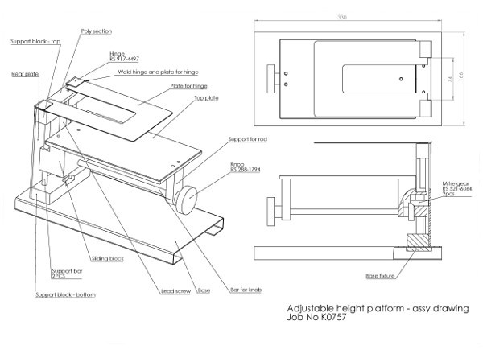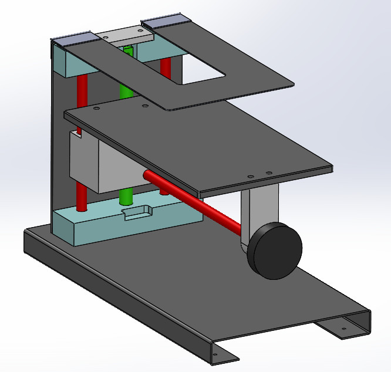
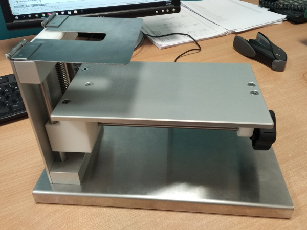
Shadowboard for tool drawer
Our client has needed shadowboard for new parts. We have used grey PVC material for this job. I have made concept of this shadowboard. After approval I have made 3D model, ordered material and set up as a new product and printed new job card.
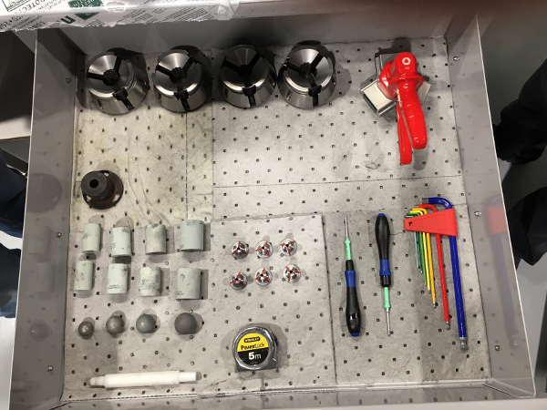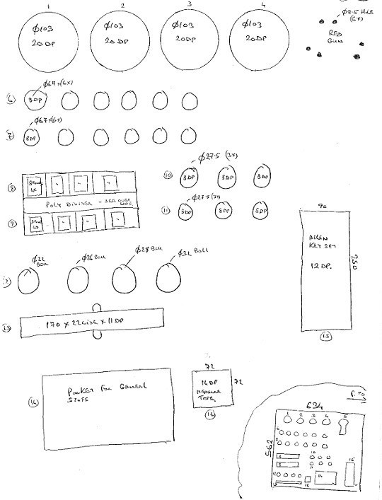
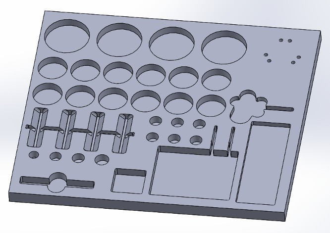
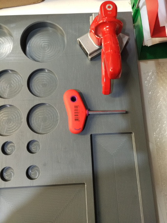
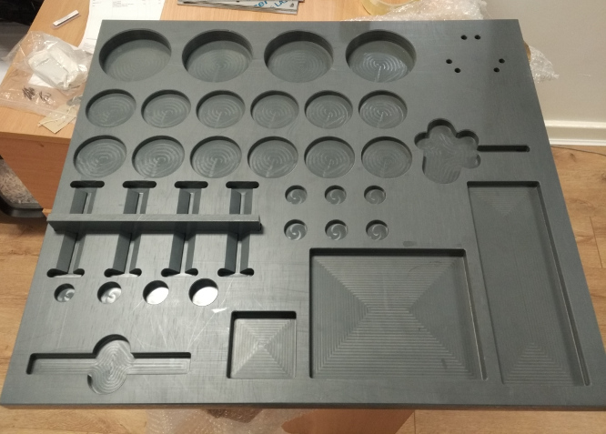
Prototype basket for test tubes
This basket was made for chemical laboratory in pharmaceutical industry. I have got only sketch from customer. I have made 3d model and 2d documentation. Welder has made basket exactly as per drawings.
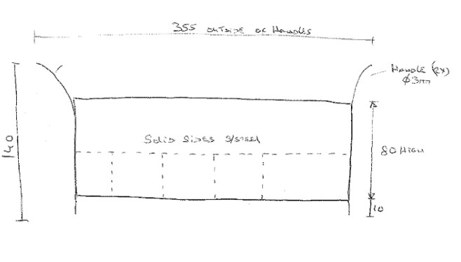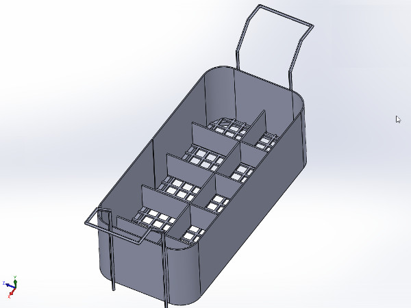
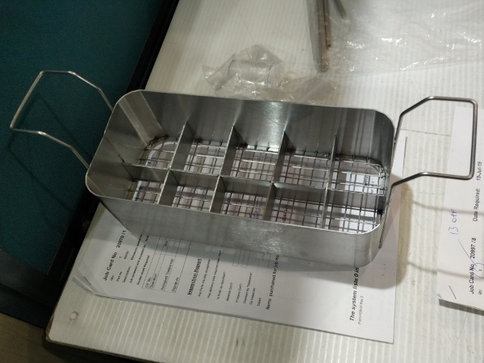
Spring holder for camera unit
Spring holder assembly drawing is shown below. Part was made in 3D CNC milling machine.
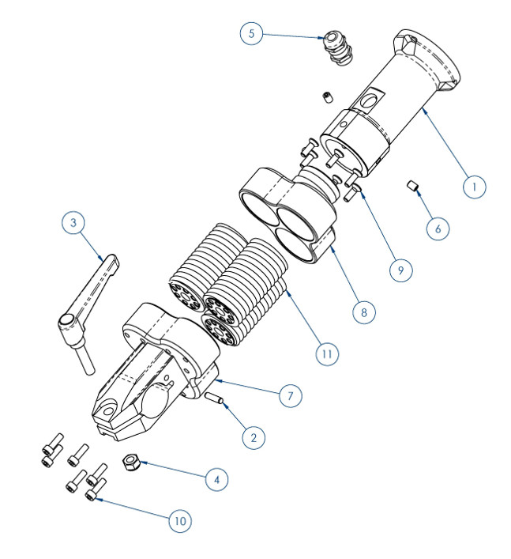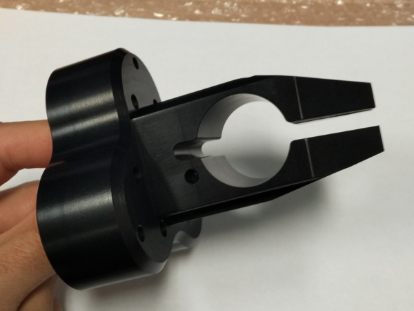
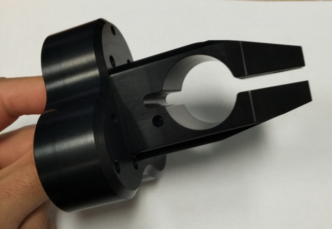
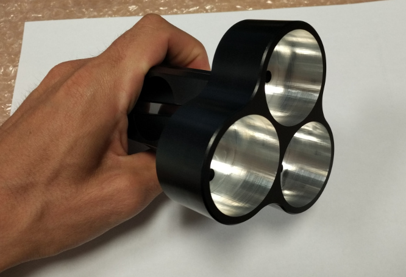
Sliding carriage
I have made concept of this sliding carriage for bigger machine. For this device I have used Rexroth linear bearings. After customer approval I have created 2D drawings. Our staff have made and assembled all parts as per drawings.
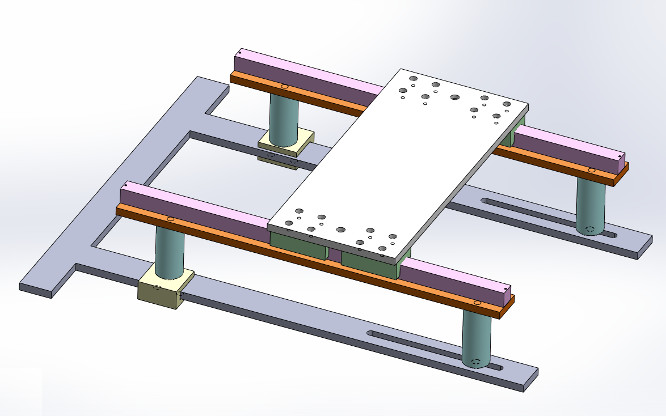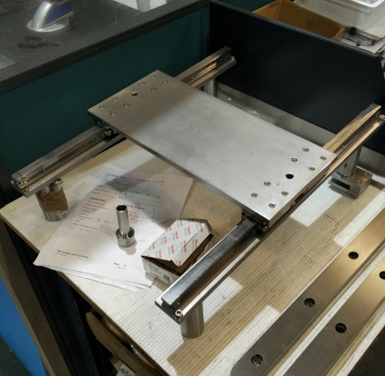
Tote clip
Customer has sent to us some 3D printed samples (pink parts). After some modifications I have created the last version. Finally we have made 1000 parts on 3D CNC milling machine. We have used blue delrin for this job.

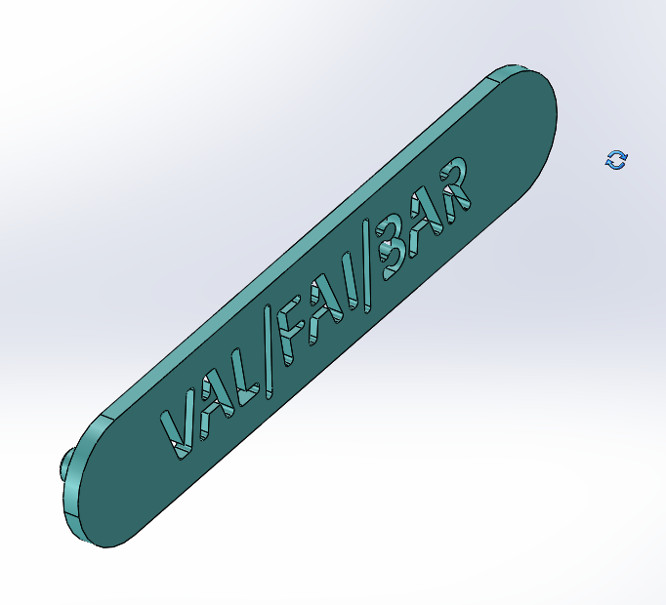
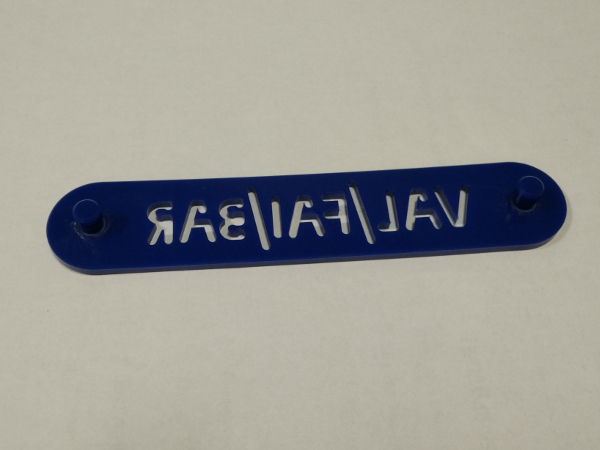
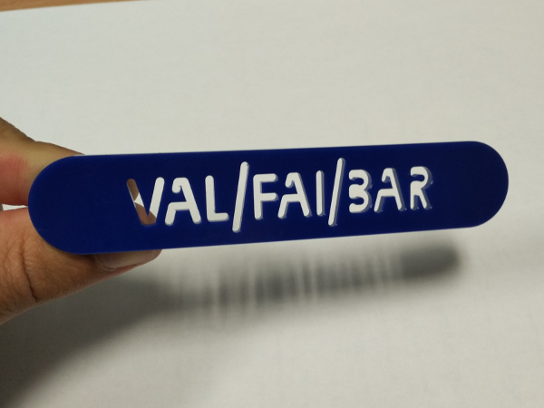
Shadowboard for some tools
Customer has sent some typical tools. I have created model and .dxf file for Mastercam environment. Finally part was created from grey PVC.
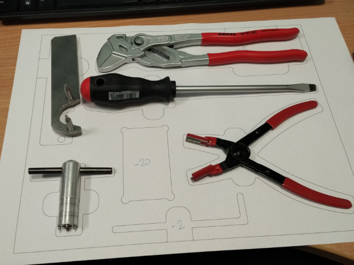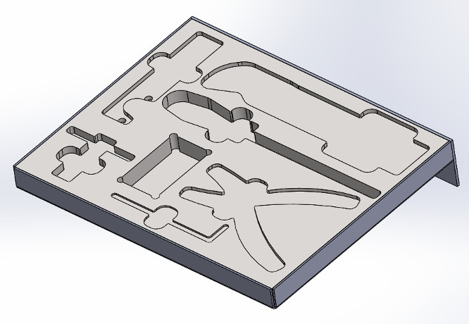
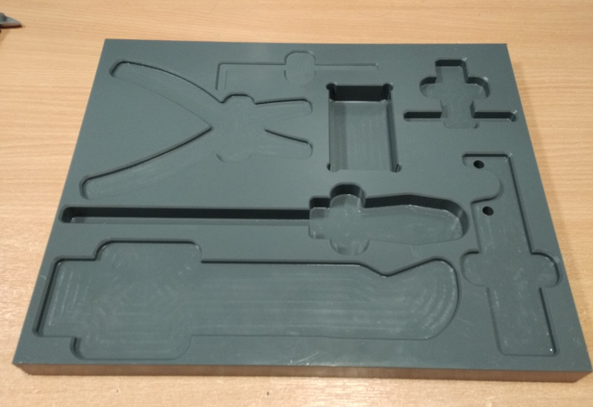
Adjustable footrest
This footrests were made for workers in chemical laboratory (cleanroom). All parts were made from high chemical resistance thermoplastics and stainless steel. I have created 3D models, ordered material and printed job card for 20 pieces.
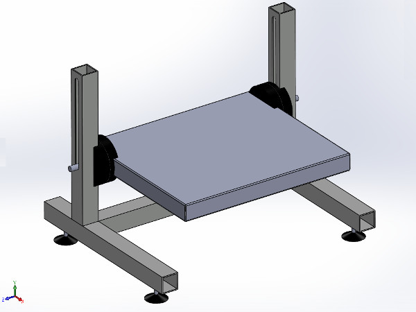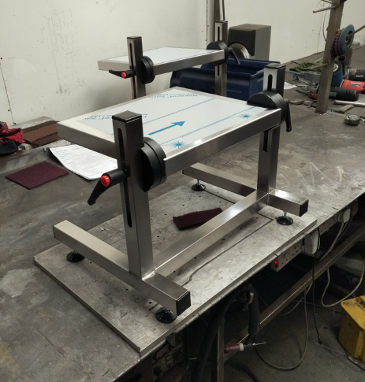
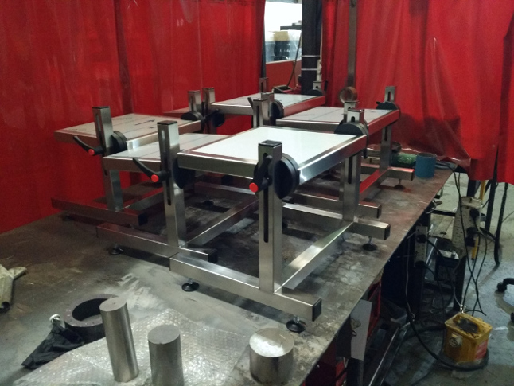
Cassette carriage
This is carriage for new products. Combination of polyacetal and stainless steel. As agreeded with client, I have created project, 3D models. After approval I have ordered material and printed job cards.
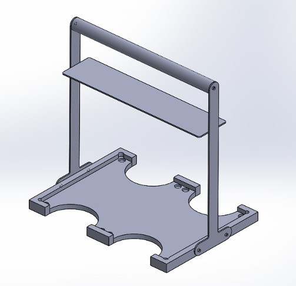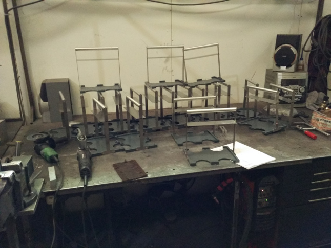
Clocking fixture
Clocking fixture is use to measuring parts in quality department. This device was made from various materials. X axis was made with Bosch rails but Z axis witch Igus rails. Mitutoyo digital clock provides precision measurements. I have made a concept of this unit. After approval I have made full technical documentation. Client were really happy about first prototype.
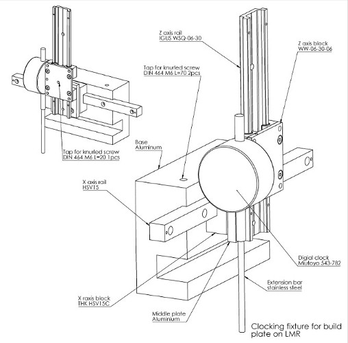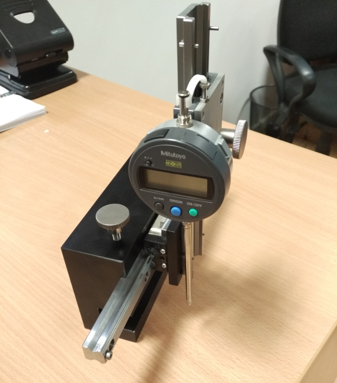

Sample mover
This part was made with stainless steel. I have designed this part for an old client machine.
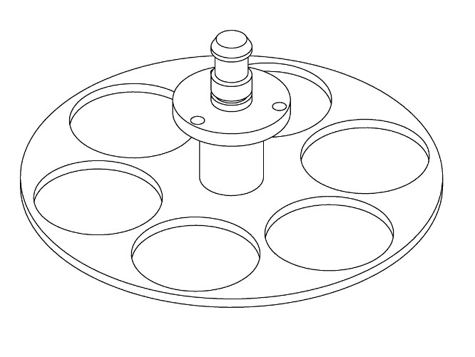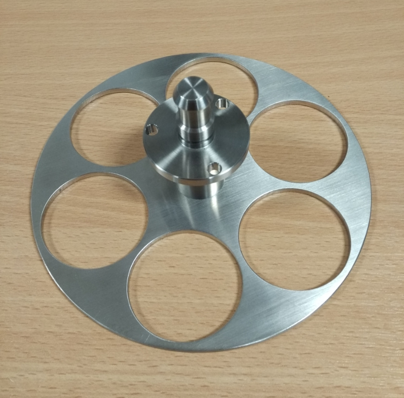